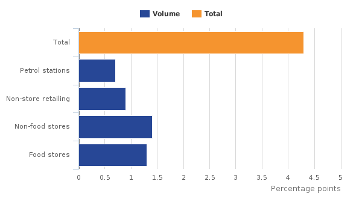

1. Main points
Estimates of the quantity bought in retail sales increased by 4.3% compared with June 2015, with all store types showing an increase.
The monthly picture however shows a decrease of 0.9% compared with May 2016 with clothing being the main store type to show a fall in growth.
The latest 3 month on 3 month figure shows an increase in growth of 1.6%,this is now the 31st consecutive period of 3 month on 3 month growth.
The amount spent online across all types of stores has increased by 14.1% on the year and 0.5% since last month; online spending now accounts for 13% of all money spent in stores.
2. Statistician’s Quote
Melanie Richard, Head of Retail Sales, Office for National Statistics
Back to table of contents3. Things you need to know about this release
This release has a revisions period which is consistent with the years being revised in the latest Blue Book publication. The time period open for revisions is therefore back to Quarter 1 (Jan to Mar) 1997.
Revisions can be made for a variety of reasons, the most common include:
late responses to surveys and administrative sources, or changes to original returns
forecasts being replaced by actual data
revisions to seasonal adjustment factors, which are re-estimated every month and reviewed annually
Revisions included within the Blue Book dataset can be made for reasons other than late or revised data, such as:
re-referencing the indices; in this case we have re-referenced the indices so 2013=100
changes to methods and concepts
changes to classifications
incorporation of annual data sources
The Retail Sales Index (RSI) measures the value and volume of retail sales in Great Britain on a monthly basis. Data are collected from businesses in the retail industry and the survey’s results are used to produce seasonally adjusted monthly, quarterly and annual estimates of output in the retail industry at current price and at chained volume measures (removing the effect of inflation). Unless otherwise stated all estimates included in this release are based on seasonally adjusted data.
The RSI is a key economic indicator and one of the earliest short-term measures of economic activity. It is used in the compilation of the national accounts and widely used by private and public sector institutions, particularly by the Bank of England and Her Majesty’s Treasury to assist in informed decision and policymaking.
Summary information can be found in the Summary Quality and Methodology Information Paper.
Back to table of contents4. Non food stores drive year on year growth
The retail industry is divided into 4 retail sectors:
predominantly food stores (for example, supermarkets, specialist food stores and sales of alcoholic drinks and tobacco)
predominantly non-food stores (for example, department stores, textiles, clothing and footwear, household goods and other stores, such as those selling jewellery, toys and books)
non-store retailing (for example, mail order, catalogues and market stalls)
stores selling automotive fuel (petrol stations)
Compared with June 2015, the quantity of sales across all retail increased by 4.3%. All 4 main retail sectors saw an increase in the quantity of sales with the largest contribution coming from non-food stores.
Within non-food stores however, it should be noted that clothing stores showed the fifth consecutive decrease in sales. Sales fell by 6.1% compared with last June. Clothing retailers have suggested that unseasonal weather has affected sales of summer wear in particular. On the other hand, department stores, household goods stores and other stores continue to show strong growth.
Figure 1: Average weekly spend in pounds millions, volume
Volume, seasonally adjusted, Great Britain
Source: Office for National Statistics
Notes:
- Components may not sum due to rounding.
Download this chart
Image .csv .xls5. Where do we spend our money?
In 2015 for every pound spent in the retail industry:
40 pence was spent in food stores
43 pence in non-food stores
8 pence in non-store retailing
9 pence in petrol stations
Using these as weights, along with the year-on-year growth rates, we can calculate how each sector contributed to the total year-on-year growth in the quantity bought.
Figure 2: Contributions to year-on-year volume growth from the 4 main retail sectors (June 2016 compared with June 2015)
Great Britain
Download this chart
Image .csv .xlsFigure 3 shows that the largest contribution to the increase in growth came from non-food stores. As previously mentioned, clothing stores continue to experience a decrease in growth, however, there was strong growth in department stores, household goods stores and other stores.
The monthly picture shows a different picture where compared with May 2016. Two of the 4 main retail sectors (food stores and non-food stores) saw a decrease in sales in June. The largest downwards contribution came from food stores. Within non-food stores, both department stores and clothing stores experienced falls in sales, however, it should be noted that the monthly changes seen across all stores can often fluctuate and the year on year changes in growth will often show the underlying trend more clearly. Sales in clothing stores this month have been impacted by the weather as stores have struggled to sell their summer ranges.
Figure 3: Contributions to month-on-month volume growth from the 4 main retail sectors (June 2016 compared with May 2016)
Great Britain
Download this chart
Image .csv .xls6. What’s the story in online sales?
Internet sales are estimates of how much was spent online through retailers across all store types in Great Britain. In April 2016:
average weekly spending online was £886.6 million; this was an increase of 9.3% compared with April 2015
the amount spent online accounted for 13.4% of all retail spending, excluding automotive fuel, compared with 12.4% in April 2015
Figure 4 shows the year-on-year growth rates for total internet sales by sector and the proportion of sales made online in each retail sector.
Back to table of contents8. Quality and methodology
Our Monthly Business Survey (MBS) for retail sales survey measures output from the retail industry in Great Britain. It samples 4,000 businesses, with all businesses employing over 100 people or with an annual turnover of more than £60 million receiving a questionnaire by post every month.
Further qualitative data/information can be found in the attached reference tables. This includes data on:
response rates
standard errors
revision triangle
The Retail Quality and Methodology Information document contains important information on:
the strengths and limitations of the data
the quality of the output: including the accuracy of the data, how it compares with related data
uses and users
how the output was created